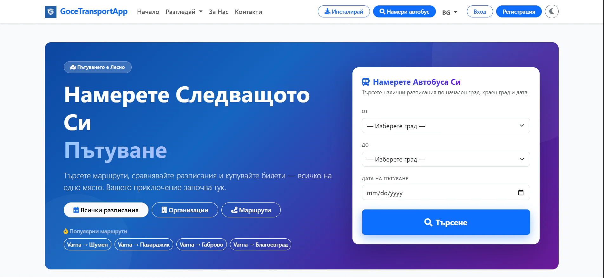

Липса на ясна организация
Транспортен бизнес има нужда от по-ясна организация на маршрути, графици и оперативна информация. Без централна система, процесите се управляват ръчно и с по-голям риск от грешки.
Вътрешни панели / транспортна платформа
Платформа, която свързва пътници и транспортни компании в единна система за маршрути, разписания, билети и управление на автопарк.
Портфолио проект
ЗА ПРОЕКТА
GoceTransportApp показва как транспортен бизнес може да управлява маршрути, разписания, билети и оперативна информация от един по-подреден интерфейс. Пътниците намират маршрути и купуват билети, а компаниите управляват шофьори, превозни средства и графици от едно място.
Транспортен бизнес има нужда от по-ясна организация на маршрути, графици и оперативна информация. Без централна система, процесите се управляват ръчно и с по-голям риск от грешки.
Уеб платформа с маршрути, разписания, билети и управление на автопарк. Различни роли за пътници, собственици на организации и администратори.
ФУНКЦИОНАЛНОСТИ
Търсене и преглед на маршрути с разписания и информация за спирки.
Покупка и управление на билети от потребителския профил.
Различни нива за пътници, собственици на организации и администратори.
Транспортни компании управляват собствените си маршрути и шофьори.
Административен преглед на превозни средства, графици и статистика.
Превозни средства, шофьори и разпределение на ресурси.
ПРОЦЕС
ТЕХНОЛОГИИ
GoceTransportApp показва, че KoveForge може да изгради подобна система за всеки бизнес, който се нуждае от:
Опиши ни процеса, който искаш да дигитализираш. Ще ти предложим ясна първа стъпка.